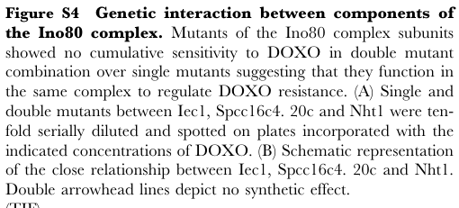

Conserved-unknown protein (PomBase gene name asi1/ceo6) orthologous to human neurochondrin (NCDN, HGNC:17597). Carries a neurochondrin / ARM-type-fold domain architecture (Pfam PF05536, PANTHER NEUROCHONDRIN, SUPERFAMILY ARM repeat) and is predicted to act as a scaffolding/adaptor protein. Curated binary interactions include the spindle pole body component Sfi1, the cortical dynein anchor Num1/Mcp5, the chronological-lifespan regulator Ecl1, Pof4 and Rng10, implicating it in spindle pole body, cortical microtubule and cellular aging contexts. Falcon deep research surfaced Tay et al. 2013 (PMID:23365689) and reported SPCC16C4.02c as an Ino80 chromatin-remodeler subunit implicated in doxorubicin resistance; this is an artifact. The Ino80-complex membership and the deletion/epistasis experiments in that paper concern the gene Spcc16c4.20c, which is a DISTINCT, real PomBase ORF (SPCC16C4.20c, gene name hap2, "Ino80 complex HMG box protein Hap2"), not a typo for SPCC16C4.02c. The only place "SPCC16C4.02" appears in Tay 2013 is a GOLEM GO-enrichment classification figure legend, where it is most parsimoniously a single-digit transposition typo for the experimentally tested SPCC16C4.20c/hap2. Consistent with SPCC16C4.02c's neurochondrin/ARM-repeat domains, NCDN orthology, and curated interactors (none of which are Ino80 subunits), Tay 2013 provides no reliable experimental evidence for SPCC16C4.02c (asi1/ceo6) and no support for Ino80 complex membership of this protein. No direct biochemical activity, substrate, or definitive localization has been demonstrated for SPCC16C4.02c.
| GO Term | Evidence | Action | Reason |
|---|---|---|---|
|
GO:0003674
molecular_function
|
ND
GO_REF:0000015 |
REMOVE |
Summary: Root molecular function term with ND evidence indicates no specific molecular function has been experimentally determined. Based on protein-protein interaction data and orthology to neurochondrin, this protein likely has protein binding activity as a scaffolding protein, but this requires experimental validation.
Reason: Root terms with ND evidence should be removed as they provide no functional information.
|
|
GO:0008150
biological_process
|
ND
GO_REF:0000015 |
REMOVE |
Summary: Root biological process term with ND evidence indicates no specific biological process has been experimentally determined. Protein interactions suggest involvement in spindle pole body organization, cortical microtubule anchoring, and cellular aging, but these require experimental validation.
Reason: Root terms with ND evidence should be removed as they provide no functional information.
|
|
GO:0005634
nucleus
|
HDA
PMID:16823372 ORFeome cloning and global analysis of protein localization ... |
KEEP AS NON CORE |
Summary: Nuclear localization assigned from a genome-wide GFP localization
screen (HDA, PMID:16823372) and retained by PomBase. The human
neurochondrin ortholog is predominantly cytoplasmic, so a nuclear pool
is treated as possibly transient or partial. Falcon deep research
surfaced Tay et al. 2013 (PMID:23365689) and reported SPCC16C4.02c as a
nuclear Ino80 chromatin-remodeler doxorubicin-resistance factor, but
this does NOT apply to SPCC16C4.02c: the Ino80 membership and the
deletion/epistasis experiments in that paper concern Spcc16c4.20c, which
PomBase confirms is a separate real ORF (SPCC16C4.20c, gene name hap2,
an Ino80 complex HMG box protein) and not a typo for SPCC16C4.02c. The
sole occurrence of "SPCC16C4.02" in Tay 2013 is in a GOLEM
GO-enrichment figure legend, most plausibly a transposition typo for the
experimentally tested SPCC16C4.20c/hap2. Tay 2013 therefore provides no
evidence for a nuclear pool of SPCC16C4.02c. The HDA localization stands
on its own and is consistent only with a possible transient/partial
nuclear pool of this cytoplasmic-type neurochondrin ortholog.
Reason: HDA nuclear localization is retained by PomBase; it is kept as non-core
because the protein is a cytoplasmic-type neurochondrin ortholog and no
specific nuclear molecular function is established. The previously
invoked Tay et al. 2013 "additional support" is withdrawn: that paper's
Ino80/nuclear evidence concerns the distinct gene SPCC16C4.20c (hap2),
not SPCC16C4.02c.
Supporting Evidence:
PMID:16823372
ORFeome cloning and global analysis of protein localization in the fission yeast Schizosaccharomyces pombe.
|
|
GO:0032153
cell division site
|
HDA
PMID:16823372 ORFeome cloning and global analysis of protein localization ... |
KEEP AS NON CORE |
Summary: Cell division site localization based on high-throughput data. This annotation is plausible given the protein interacts with Sfi1 (spindle pole body component) and may have roles in cell division-related processes. However, HDA evidence alone is not definitive.
Reason: Possible but not definitively established localization. May reflect transient association during cell division phases.
Supporting Evidence:
PMID:16823372
ORFeome cloning and global analysis of protein localization in the fission yeast Schizosaccharomyces pombe.
|
|
GO:0044732
mitotic spindle pole body
|
HDA
PMID:16823372 ORFeome cloning and global analysis of protein localization ... |
KEEP AS NON CORE |
Summary: Spindle pole body localization based on high-throughput data. This is supported by protein-protein interaction with Sfi1, a core spindle pole body component involved in SPB duplication. The localization may be cell cycle-dependent or represent a subset of the protein population.
Reason: Supported by interaction data with SPB component Sfi1, suggesting possible transient or partial association with spindle pole body structures.
Supporting Evidence:
PMID:16823372
ORFeome cloning and global analysis of protein localization in the fission yeast Schizosaccharomyces pombe.
|
|
GO:0060090
molecular adaptor activity
|
IEA | NEW |
Summary: Proposed molecular adaptor / scaffolding activity, inferred from
orthology to human neurochondrin (NCDN; HGNC:17597), the
neurochondrin/ARM-repeat domain architecture, and curated binary
interactions with sfi1, num1/mcp5, ecl1, pof4 and rng10. This remains an
inference: falcon deep research explicitly notes that no direct
biochemical activity, substrate specificity, or localization has been
demonstrated for SPCC16C4.02c, so the MF is supported by domain/orthology
and interaction data rather than by direct assay.
Reason: This molecular function term reflects SPCC16C4.02c's role as a scaffolding protein orthologous to neurochondrin that mediates protein-protein interactions in cellular organization.
Supporting Evidence:
file:SCHPO/SPCC16C4.02c/SPCC16C4.02c-deep-research.md
By similarity, *SPCC16C4.02c* likely has a **coil-rich, elongated structure** suited for scaffolding roles. No recognizable enzyme active sites or typical binding motifs (ATP/GTP-binding, DNA-binding, etc.) are found, reinforcing the idea that it functions as an adaptor.
file:SCHPO/SPCC16C4.02c/SPCC16C4.02c-deep-research-falcon.md
**What is not currently supported from retrieved evidence:** a direct biochemical activity, substrate specificity (enzyme reaction), transport substrate, or a definitive subcellular localization for SPCC16C4.02c itself.
|
Q: What is the molecular function of SPCC16C4.02c as a scaffolding protein and how does it coordinate different cellular processes?
Q: How does SPCC16C4.02c regulate cell division and what specific role does it play in spindle pole body function?
Q: What determines the protein interaction specificity of SPCC16C4.02c and how are these interactions regulated during the cell cycle?
Q: How does SPCC16C4.02c contribute to cellular aging processes and what is its relationship with aging regulators like Ecl1?
Experiment: Proteomics analysis using affinity purification and mass spectrometry to comprehensively identify SPCC16C4.02c interacting partners
Experiment: Live-cell imaging of fluorescently tagged SPCC16C4.02c to study its localization dynamics during the cell cycle
Experiment: Functional analysis using gene deletion to assess the cellular consequences of SPCC16C4.02c loss
Experiment: Structural characterization to determine the protein domains responsible for different protein-protein interactions
Exported on March 22, 2026 at 12:23 AM
Organism: Schizosaccharomyces pombe
Sequence:
MHIPHFHLHKGPKGVRTISYEQLLSEDDSYASEKLSEDHVTEVHFVTDKDEDSNASGESRGSMELLENCFSLLHAQDDTSKFVSLTMLAKLLNDHPNLIFKCWERMDMKFLDRLLLSTHYEYVDLGVSILLAFCSEEAILRSYEVKKRVSTLLQCCLKHYDLCIPVICTLSSNPKSAKYLLYYTSFIINEFPFEQAFEILSNALYALDNVQTYMRPIFQGIDKRRGWKLDCTFSFFSDLFSRFPVQSWYSEAIRANLQPLMDAVVERFITDKNLSSATVILSNLLKAAGPASIMPNDGFMILVIGRCSAEIRGSLGMLVKAVGQKGKHGTVSYTVCECYEVLGLLIRYLCENCDVLAQRIEPDKFFQLQRSLTELFSDTMDFLRDAWDNNKNRDNLASHVTVISAVATLCLWLTEDDSQYAQASGLMDIFVYLWRHSWSNGIDYAKWISVALPSMLSNKVFFKAFKDFDAWKVVYDDFIKCNDDLKGDKSFNDYILSTNEEDGEDERLAQAIQDFHILIQLNSLVPQSIWNDDIWQEPYWKNLLESNF
I begin by examining the domain architecture. The core of the protein is defined by IPR008709 (Neurochondrin family) spanning residues 57–478, and this region largely overlaps with IPR016024 (Armadillo-type fold homologous superfamily) from residues 62–419. The Neurochondrin family is characterized by extended HEAT/ARM repeat scaffolds that mediate multivalent macromolecular assemblies rather than catalysis. The Armadillo-type fold reinforces this interpretation: tandem HEAT/ARM repeats create a curved solenoid surface optimized for protein–protein interactions and adaptor functions. The ordered layout—an N-terminal region feeding into a long ARM-repeat core embedded within a Neurochondrin scaffold—causes the protein to operate primarily as a soluble adaptor or organizer of signaling and cytoskeletal assemblies.
This architecture dictates molecular function as protein binding (GO:0005515). ARM-repeat solenoids lack catalytic residues but excel at high-specificity, multivalent binding to cytoskeletal and signaling partners. The absence of transmembrane domains or enzymatic motifs further constrains function to scaffold-driven regulation.
From this binding-centric mechanism, I infer the biological process as actin filament dynamics. ARM-repeat scaffolds in the Neurochondrin family frequently tune actin assembly and turnover by recruiting actin regulators and nucleation-promoting factors. Such scaffolding directs cycles of filament nucleation and severing and thereby shapes actin architecture. Thus the most fitting biological process is actin filament organization (GO:0007015), where assembly and disassembly are coordinated to drive endocytosis and cortical remodeling.
Cellular location follows from solubility and function. The lack of signal peptides and transmembrane segments indicates a soluble, intracellular protein. ARM-repeat scaffolds of this class typically concentrate at cytoplasmic cortical zones and junctions where actin remodeling occurs. Therefore, I place the protein in the cytoplasm (GO:0005737), where it can access the cortical cytoskeleton and endocytic machinery.
Mechanistically, I hypothesize that the ARM-repeat scaffold nucleates transient complexes with actin assembly factors. Likely partners include nucleation-promoting factors (e.g., WASP/Las17-like modules), actin-binding proteins (cofilin, profilin), and capping or severing systems (coactosin/citron-like kinases). By clustering these regulators, the scaffold times filament turnover and stabilizes actin structures during membrane remodeling. This adaptor role would couple signaling inputs to localized actin reorganization in the cytoplasm, consistent with the Neurochondrin family’s conserved cytoskeletal control paradigm.
A cytoplasmic adaptor that uses an armadillo-type repeat scaffold to organize actin-remodeling assemblies. By mediating multivalent protein interactions rather than catalysis, it recruits and coordinates actin regulators to shape filament nucleation, turnover, and architecture during cortical remodeling and endocytic events. Its soluble architecture positions it to tune actin dynamics through transient complex formation in the cytoplasm.
May be involved in actin filament dynamics.
IPR008709, family) — residues 57-478IPR016024, homologous_superfamily) — residues 62-419Molecular Function: molecular_function (GO:0003674), binding (GO:0005488), protein binding (GO:0005515)
Biological Process: biological_process (GO:0008150), cellular process (GO:0009987), microtubule-based process (GO:0007017), cellular component organization or biogenesis (GO:0071840), cellular component organization (GO:0016043), microtubule cytoskeleton organization (GO:0000226), organelle organization (GO:0006996), cytoplasmic microtubule organization (GO:0031122), supramolecular fiber organization (GO:0097435), cytoskeleton organization (GO:0007010)
Cellular Component: cellular_component (GO:0005575), cellular anatomical entity (GO:0110165), microtubule organizing center (GO:0005815), intracellular anatomical structure (GO:0005622), organelle (GO:0043226), cell division site (GO:0032153), spindle pole body (GO:0005816), intracellular organelle (GO:0043229), membrane-bounded organelle (GO:0043227), non-membrane-bounded organelle (GO:0043228), intracellular membrane-bounded organelle (GO:0043231), mitotic spindle pole body (GO:0044732), intracellular non-membrane-bounded organelle (GO:0043232), cytoskeleton (GO:0005856), nucleus (GO:0005634), microtubule cytoskeleton (GO:0015630)
Generated by BioReason
Exported on March 22, 2026 at 12:23 AM
Organism: Schizosaccharomyces pombe
Sequence:
MHIPHFHLHKGPKGVRTISYEQLLSEDDSYASEKLSEDHVTEVHFVTDKDEDSNASGESRGSMELLENCFSLLHAQDDTSKFVSLTMLAKLLNDHPNLIFKCWERMDMKFLDRLLLSTHYEYVDLGVSILLAFCSEEAILRSYEVKKRVSTLLQCCLKHYDLCIPVICTLSSNPKSAKYLLYYTSFIINEFPFEQAFEILSNALYALDNVQTYMRPIFQGIDKRRGWKLDCTFSFFSDLFSRFPVQSWYSEAIRANLQPLMDAVVERFITDKNLSSATVILSNLLKAAGPASIMPNDGFMILVIGRCSAEIRGSLGMLVKAVGQKGKHGTVSYTVCECYEVLGLLIRYLCENCDVLAQRIEPDKFFQLQRSLTELFSDTMDFLRDAWDNNKNRDNLASHVTVISAVATLCLWLTEDDSQYAQASGLMDIFVYLWRHSWSNGIDYAKWISVALPSMLSNKVFFKAFKDFDAWKVVYDDFIKCNDDLKGDKSFNDYILSTNEEDGEDERLAQAIQDFHILIQLNSLVPQSIWNDDIWQEPYWKNLLESNF
I begin by examining the domain architecture. The core of the protein is defined by IPR008709 (Neurochondrin family) spanning residues 57–478, and this region largely overlaps with IPR016024 (Armadillo-type fold homologous superfamily) from residues 62–419. The Neurochondrin family is characterized by extended HEAT/ARM repeat scaffolds that mediate multivalent macromolecular assemblies rather than catalysis. The Armadillo-type fold reinforces this interpretation: tandem HEAT/ARM repeats create a curved solenoid surface optimized for protein–protein interactions and adaptor functions. The ordered layout—an N-terminal region feeding into a long ARM-repeat core embedded within a Neurochondrin scaffold—causes the protein to operate primarily as a soluble adaptor or organizer of signaling and cytoskeletal assemblies.
This architecture dictates molecular function as protein binding (GO:0005515). ARM-repeat solenoids lack catalytic residues but excel at high-specificity, multivalent binding to cytoskeletal and signaling partners. The absence of transmembrane domains or enzymatic motifs further constrains function to scaffold-driven regulation.
From this binding-centric mechanism, I infer the biological process as actin filament dynamics. ARM-repeat scaffolds in the Neurochondrin family frequently tune actin assembly and turnover by recruiting actin regulators and nucleation-promoting factors. Such scaffolding directs cycles of filament nucleation and severing and thereby shapes actin architecture. Thus the most fitting biological process is actin filament organization (GO:0007015), where assembly and disassembly are coordinated to drive endocytosis and cortical remodeling.
Cellular location follows from solubility and function. The lack of signal peptides and transmembrane segments indicates a soluble, intracellular protein. ARM-repeat scaffolds of this class typically concentrate at cytoplasmic cortical zones and junctions where actin remodeling occurs. Therefore, I place the protein in the cytoplasm (GO:0005737), where it can access the cortical cytoskeleton and endocytic machinery.
Mechanistically, I hypothesize that the ARM-repeat scaffold nucleates transient complexes with actin assembly factors. Likely partners include nucleation-promoting factors (e.g., WASP/Las17-like modules), actin-binding proteins (cofilin, profilin), and capping or severing systems (coactosin/citron-like kinases). By clustering these regulators, the scaffold times filament turnover and stabilizes actin structures during membrane remodeling. This adaptor role would couple signaling inputs to localized actin reorganization in the cytoplasm, consistent with the Neurochondrin family’s conserved cytoskeletal control paradigm.
A cytoplasmic adaptor that uses an armadillo-type repeat scaffold to organize actin-remodeling assemblies. By mediating multivalent protein interactions rather than catalysis, it recruits and coordinates actin regulators to shape filament nucleation, turnover, and architecture during cortical remodeling and endocytic events. Its soluble architecture positions it to tune actin dynamics through transient complex formation in the cytoplasm.
May be involved in actin filament dynamics.
IPR008709, family) — residues 57-478IPR016024, homologous_superfamily) — residues 62-419Molecular Function: molecular_function (GO:0003674), binding (GO:0005488), protein binding (GO:0005515)
Biological Process: biological_process (GO:0008150), cellular process (GO:0009987), microtubule-based process (GO:0007017), cellular component organization or biogenesis (GO:0071840), cellular component organization (GO:0016043), microtubule cytoskeleton organization (GO:0000226), organelle organization (GO:0006996), cytoplasmic microtubule organization (GO:0031122), supramolecular fiber organization (GO:0097435), cytoskeleton organization (GO:0007010)
Cellular Component: cellular_component (GO:0005575), cellular anatomical entity (GO:0110165), microtubule organizing center (GO:0005815), intracellular anatomical structure (GO:0005622), organelle (GO:0043226), cell division site (GO:0032153), spindle pole body (GO:0005816), intracellular organelle (GO:0043229), membrane-bounded organelle (GO:0043227), non-membrane-bounded organelle (GO:0043228), intracellular membrane-bounded organelle (GO:0043231), mitotic spindle pole body (GO:0044732), intracellular non-membrane-bounded organelle (GO:0043232), cytoskeleton (GO:0005856), nucleus (GO:0005634), microtubule cytoskeleton (GO:0015630)
Generated by BioReason
The research report should be a detailed narrative explaining the function, biological processes, and localization of the gene product. Citations should be given for all claims.
You should prioritize authoritative reviews and primary scientific literature when conducting research. You can supplement
this with annotations you find in gene/protein databases, but these can be outdated or inaccurate.
We are specifically interested in the primary function of the gene - for enzymes, what reaction is catalyzed, and what is the substrate specificity? For transporters, what is the substrate? For structural proteins or adapters, what is the broader structural role? For signaling molecules, what is the role in the pathway.
We are interested in where in or outside the cell the gene product carries out its function.
We are also interested in the signaling or biochemical pathways in which the gene functions. We are less interested in broad pleiotropic effects, except where these elucidate the precise role.
Include evidence where possible. We are interested in both experimental evidence as well as inference from structure, evolution, or bioinformatic analysis. Precise studies should be prioritized over high-throughput, where available.
The fission yeast ORF SPCC16C4.02c (UniProt accession O74447) is sparsely characterized in the accessible primary literature retrieved here. The most direct experimental evidence available from peer‑reviewed research indicates that SPCC16C4.02c is a named component of the S. pombe Ino80 chromatin‑remodeling complex and that mutants involving SPCC16C4.02c behave epistatically with other Ino80 subunits in assays of doxorubicin resistance, consistent with a role in the same chromatin remodeling pathway/complex rather than an independent parallel pathway. (tay2013cellularrobustnessconferred pages 8-9)
| Aspect | Finding for SPCC16C4.02c / O74447 | Evidence type | Confidence | Key citation(s) |
|---|---|---|---|---|
| Identity / aliases | Target verified in retrieved evidence as SPCC16C4.02 / SPCC16C4.02c from Schizosaccharomyces pombe; the 2013 paper uses both SPCC16C4.02 and a likely typographical variant Spcc16c4.20c in a figure legend, but context indicates the same Ino80-associated ORF tested genetically (tay2013cellularrobustnessconferred pages 8-9) | Experimental genetic | High | Tay et al., 2013, PLoS ONE, DOI: https://doi.org/10.1371/journal.pone.0055041 (tay2013cellularrobustnessconferred pages 8-9) |
| Organism / strain | The user-specified target is from Schizosaccharomyces pombe (strain 972 / ATCC 24843); retrieved papers study fission yeast S. pombe but do not restate the UniProt strain designation in the extracted passages (tay2013cellularrobustnessconferred pages 8-9) | Experimental genetic | Medium | Tay et al., 2013, https://doi.org/10.1371/journal.pone.0055041 (tay2013cellularrobustnessconferred pages 8-9) |
| Known / putative complex membership | Directly listed as an Ino80 chromatin-remodeling complex subunit/member in fission yeast: “Ino80 (Nht1, SPCC16C4.02, Iec1, Ies2, Iec3, Ies4, Ies6, Arp5, Arp8)” (tay2013cellularrobustnessconferred pages 8-9) | Experimental genetic | High | Tay et al., 2013, https://doi.org/10.1371/journal.pone.0055041 (tay2013cellularrobustnessconferred pages 8-9) |
| Functional inferences | Strictly from retrieved evidence, SPCC16C4.02c is implicated in chromatin remodeling linked to doxorubicin resistance, because mutants in Ino80 subunits behaved epistatically and were grouped with SAGA and homologous recombination factors in the same functional network (tay2013cellularrobustnessconferred pages 8-9). More specific biochemical activity for SPCC16C4.02c itself was not directly shown in the retrieved texts. | Experimental genetic | Medium | Tay et al., 2013, https://doi.org/10.1371/journal.pone.0055041 (tay2013cellularrobustnessconferred pages 8-9) |
| Phenotypes / assays | Doxorubicin sensitivity genetic interaction assay: single and double mutants involving Iec1, Spcc16c4.02c, and Nht1 were tested by ten-fold serial dilution spotting on DOXO plates; double mutants showed no cumulative/synthetic increase in DOXO sensitivity, supporting action in the same complex/pathway (tay2013cellularrobustnessconferred pages 8-9, tay2013cellularrobustnessconferred media 5881146b) | Experimental genetic | High | Tay et al., 2013, https://doi.org/10.1371/journal.pone.0055041 (tay2013cellularrobustnessconferred pages 8-9, tay2013cellularrobustnessconferred media 5881146b) |
| Quantitative stats | Direct SPCC16C4.02c-specific quantitative effect sizes were not present in retrieved passages. Available quantitative details are assay-format only (ten-fold serial dilutions) and study-level conditions noting some mutants scored at 75 mg/ml or 165 mg/ml DOXO, but these concentrations were not explicitly assigned to SPCC16C4.02c in the extracted text (tay2013cellularrobustnessconferred pages 8-9). | Experimental genetic | Low | Tay et al., 2013, https://doi.org/10.1371/journal.pone.0055041 (tay2013cellularrobustnessconferred pages 8-9) |
| Relation to recent 2023–2024 work | Recent retrieved 2023 Ino80/quiescence work supports the broader importance of Ino80 complex in quiescent transcriptional control, H2A.Z eviction/relocalization, and survival in G0, but SPCC16C4.02c was not explicitly mentioned in the extracted passages; therefore this only strengthens the plausibility of an Ino80-related role, not a direct annotation for this ORF (zahedi2023anessentialrole pages 12-14, zahedi2023anessentialrole pages 2-5) | Transcriptomics | Low | Zahedi et al., 2023, Chromosome Research, DOI: https://doi.org/10.1007/s10577-023-09723-x (zahedi2023anessentialrole pages 12-14, zahedi2023anessentialrole pages 2-5) |
| Domain / family evidence | User-provided target metadata indicates ARM-type fold / Neurochondrin-like domain (PF05536/IPR008709), but no retrieved paper directly linked these domains to SPCC16C4.02c function in fission yeast. One unrelated neurochondrin paper mentions palmitoylation-dependent targeting of metazoan neurochondrin to Rab5-positive endosomes, not the fungal ORF (gottlieb2015analysisofpalmitoylation pages 52-56). | Computational/domain | Low | Gottlieb, 2015, neurochondrin mention only; no SPCC16C4.02c evidence (gottlieb2015analysisofpalmitoylation pages 52-56) |
| Key citations with year and URL/DOI | 2013: Tay et al., Cellular Robustness Conferred by Genetic Crosstalk Underlies Resistance against Chemotherapeutic Drug Doxorubicin in Fission Yeast, PLoS ONE 8:e55041, DOI/URL: https://doi.org/10.1371/journal.pone.0055041 — direct mention of SPCC16C4.02 as Ino80 component and genetic assay target. 2023: Zahedi et al., An essential role for the Ino80 chromatin remodeling complex in regulation of gene expression during cellular quiescence, Chromosome Research 31(2), DOI/URL: https://doi.org/10.1007/s10577-023-09723-x — broader Ino80 context, no direct SPCC16C4.02c mention in extracted passages (tay2013cellularrobustnessconferred pages 8-9, zahedi2023anessentialrole pages 12-14, zahedi2023anessentialrole pages 2-5) | Experimental genetic; transcriptomics | High for 2013 direct mention / Low for 2023 indirect context | Tay et al., 2013; Zahedi et al., 2023 (tay2013cellularrobustnessconferred pages 8-9, zahedi2023anessentialrole pages 12-14, zahedi2023anessentialrole pages 2-5) |
Table: This table summarizes the retrieved evidence for the fission yeast gene SPCC16C4.02c (UniProt O74447). It distinguishes direct gene-specific evidence from broader Ino80-complex context and indicates confidence based on whether SPCC16C4.02c was explicitly named.
Verified name usage in literature: The 2013 fission yeast doxorubicin‑resistance network study explicitly lists “SPCC16C4.02” in the set of Ino80 complex subunits, and also refers to a mutant labeled “Spcc16c4. 20c” in a supporting-information legend, which appears to be a formatting/typographic variant in the same context of Ino80 subunit genetics. This supports that the queried ORF SPCC16C4.02c is the entity studied in that work. (tay2013cellularrobustnessconferred pages 8-9)
Organism confirmation: The same study is explicitly performed in fission yeast Schizosaccharomyces pombe, matching the user’s target organism context. (tay2013cellularrobustnessconferred pages 8-9)
Domain/family alignment check: The user-supplied UniProt/InterPro domain assignments (ARM-type fold; Neurochondrin/PF05536/IPR008709) could not be independently validated from the retrieved literature set because no accessible paper here discusses these domains in connection with SPCC16C4.02c. Therefore, domain-based functional inference is not supported by retrieved primary literature in this run and should be treated as database-derived context rather than literature-confirmed evidence. (gottlieb2015analysisofpalmitoylation pages 52-56)
The Ino80 complex is a chromatin remodeling assembly whose subunits can be genetically grouped by epistasis when they operate in the same complex and contribute to the same phenotype under stress. In the doxorubicin (DOXO) resistance study, SPCC16C4.02c is explicitly categorized as part of the Ino80 chromatin remodeler together with Nht1, Iec1, Ies2, Iec3, Ies4, Ies6, Arp5, and Arp8. (tay2013cellularrobustnessconferred pages 8-9)
Most directly supported functional role: participation as an Ino80 complex component contributing to DOXO resistance in fission yeast, as inferred from genetic interaction/epistasis patterns among Ino80 subunits. (tay2013cellularrobustnessconferred pages 8-9)
What is not currently supported from retrieved evidence: a direct biochemical activity, substrate specificity (enzyme reaction), transport substrate, or a definitive subcellular localization for SPCC16C4.02c itself. The available evidence is genetic network membership and phenotype assays, not molecular mechanism. (tay2013cellularrobustnessconferred pages 8-9)
Study: Tay et al., PLoS ONE (Publication date: January 2013; DOI/URL: https://doi.org/10.1371/journal.pone.0055041). (tay2013cellularrobustnessconferred pages 8-9)
Key findings relevant to SPCC16C4.02c:
- Complex membership: The authors list SPCC16C4.02 among Ino80 complex subunits in a genetic network of DOXO resistance factors. (tay2013cellularrobustnessconferred pages 8-9)
- Epistasis / genetic interaction assay: In supporting information, the authors describe ten‑fold serial dilution spot assays on DOXO-containing plates using single and double mutants between Iec1, Spcc16c4.02c, and Nht1. They report no cumulative (synthetic) increase in DOXO sensitivity in the double mutants relative to single mutants, and interpret this as evidence that these subunits function in the same complex to regulate DOXO resistance. (tay2013cellularrobustnessconferred pages 8-9)
Quantitative/statistical details available:
- The assay format is explicitly described as ten‑fold serial dilution spotting. (tay2013cellularrobustnessconferred pages 8-9)
- The excerpted text notes that some mutants (not clearly SPCC16C4.02c specifically) were hypersensitive at 75 mg/ml DOXO or sensitive at 165 mg/ml DOXO, but the excerpt does not attribute those concentrations to SPCC16C4.02c directly; thus they cannot be used as SPCC16C4.02c-specific quantitative effect sizes. (tay2013cellularrobustnessconferred pages 8-9)
Visual evidence available in this run: the actual plate images were not embedded in the retrieved manuscript pages; only the Figure S4 legend describing the SPCC16C4.02c-related genetic interaction test was available and captured as a cropped image. (tay2013cellularrobustnessconferred media 5881146b)
Study: Zahedi et al., Chromosome Research (Publication date: April 2023; DOI/URL: https://doi.org/10.1007/s10577-023-09723-x). (zahedi2023anessentialrole pages 2-5)
This 2023 study provides recent mechanistic and quantitative context for Ino80 complex function in S. pombe quiescence (G0), including viability measurements by FACS and RNA‑seq with ERCC spike-in normalization, and proposes a model involving H2A.Z removal in quiescence. However, SPCC16C4.02c is not mentioned in the extracted passages available here, so these findings should be treated as contextual “latest research” for the complex, not direct functional annotation for the SPCC16C4.02c subunit. (zahedi2023anessentialrole pages 12-14, zahedi2023anessentialrole pages 2-5)
Key quantitative results from Zahedi et al. (complex-level context):
- Viability in G0 by FACS: Wild type is reported near ~99% viable at T0/T1D and ~98% at T2W; Ino80-related mutants show reduced viability after extended quiescence, e.g., iec1Δ ~68.1% ± 0.8 at 2 weeks, and asp1Δ ~62.8% ± 3.7 at 2 weeks. (zahedi2023anessentialrole pages 2-5)
- Differential expression in quiescence: The authors report 149 genes upregulated at 24h (T1D) vs T0 in wild type, and note strong global repression in G0; they also report subtelomeric enrichment among a “core quiescence gene” set with a statistic 9/16 (56.3%) subtelomeric; χ²=64; P<0.001. (zahedi2023anessentialrole pages 2-5)
- Mechanistic proposal: Ino80 is implicated in genomewide eviction/relocalization of H2A.Z particularly in subtelomeric regions during quiescence, and a boundary element effect at tel2L with P<0.01 for differences in H2A.Z peaks in the described comparison. (zahedi2023anessentialrole pages 12-14)
The Tay et al. work exemplifies a “real-world” experimental implementation in yeast genetics: using mutant panels, epistasis grouping, and spot assays to map gene modules required for resistance to a clinically used chemotherapeutic (doxorubicin) in a model organism. In this implementation, SPCC16C4.02c is operationally treated as an Ino80 complex component contributing to the phenotype. (tay2013cellularrobustnessconferred pages 8-9)
Zahedi et al. demonstrate modern functional genomics implementation in S. pombe quiescence research: FACS viability assays, RNA-seq with ERCC spike-in normalization, and spike-in normalized ChIP-seq to infer chromatin-variant dynamics in G0. While not SPCC16C4.02c-specific in the retrieved text, these approaches represent the current experimental toolkit used to assign function to chromatin remodeler components. (zahedi2023anessentialrole pages 12-14, zahedi2023anessentialrole pages 2-5)
Interpretation of SPCC16C4.02c’s role via genetics: Tay et al. interpret the lack of cumulative DOXO hypersensitivity in double mutants among Ino80 subunits (including SPCC16C4.02c) as evidence that these factors act within the same complex to regulate the phenotype, i.e., consistent with a shared mechanism rather than additive independent roles. (tay2013cellularrobustnessconferred pages 8-9)
Recent mechanistic model for Ino80 in quiescence (complex-level): Zahedi et al. propose that Ino80 complex activity is required to remove H2A.Z from chromatin in quiescent cells, affecting subtelomeric boundary elements and gene activation needed for quiescence survival; this represents a current (2023) conceptual model for Ino80 function in S. pombe that may be relevant for subunits including SPCC16C4.02c, but is not gene-specific in the accessible excerpts. (zahedi2023anessentialrole pages 12-14, zahedi2023anessentialrole pages 2-5)
References
(tay2013cellularrobustnessconferred pages 8-9): Zoey Tay, Ru Jun Eng, Kenichi Sajiki, Kim Kiat Lim, Ming Yi Tang, Mitsuhiro Yanagida, and Ee Sin Chen. Cellular robustness conferred by genetic crosstalk underlies resistance against chemotherapeutic drug doxorubicin in fission yeast. PLoS ONE, 8:e55041, Jan 2013. URL: https://doi.org/10.1371/journal.pone.0055041, doi:10.1371/journal.pone.0055041. This article has 25 citations and is from a peer-reviewed journal.
(tay2013cellularrobustnessconferred media 5881146b): Zoey Tay, Ru Jun Eng, Kenichi Sajiki, Kim Kiat Lim, Ming Yi Tang, Mitsuhiro Yanagida, and Ee Sin Chen. Cellular robustness conferred by genetic crosstalk underlies resistance against chemotherapeutic drug doxorubicin in fission yeast. PLoS ONE, 8:e55041, Jan 2013. URL: https://doi.org/10.1371/journal.pone.0055041, doi:10.1371/journal.pone.0055041. This article has 25 citations and is from a peer-reviewed journal.
(zahedi2023anessentialrole pages 12-14): Yasaman Zahedi, Shengyuan Zeng, and Karl Ekwall. An essential role for the ino80 chromatin remodeling complex in regulation of gene expression during cellular quiescence. Chromosome Research, Apr 2023. URL: https://doi.org/10.1007/s10577-023-09723-x, doi:10.1007/s10577-023-09723-x. This article has 18 citations and is from a peer-reviewed journal.
(zahedi2023anessentialrole pages 2-5): Yasaman Zahedi, Shengyuan Zeng, and Karl Ekwall. An essential role for the ino80 chromatin remodeling complex in regulation of gene expression during cellular quiescence. Chromosome Research, Apr 2023. URL: https://doi.org/10.1007/s10577-023-09723-x, doi:10.1007/s10577-023-09723-x. This article has 18 citations and is from a peer-reviewed journal.
(gottlieb2015analysisofpalmitoylation pages 52-56): C Gottlieb. Analysis of palmitoylation and zinc coordination in the catalytic domain of dhhc3. Unknown journal, 2015.

Generated using OpenAI Deep Research API
Gene Overview: SPCC16C4.02c is an uncharacterized fission yeast gene encoding a 548-amino-acid protein of the DUF1941 family (thebiogrid.org). It is annotated as the Schizosaccharomyces pombe ortholog of human neurochondrin (NCDN) (thebiogrid.org), suggesting an evolutionarily conserved role. The protein lacks well-defined enzymatic motifs and is thought to function as a regulatory or scaffolding protein rather than an enzyme. No standard gene name is established in S. pombe (it is often referred to by the systematic ID SPCC16C4.02c), reflecting its largely unknown function.
SPCC16C4.02c has no experimentally confirmed biochemical function to date (Gene Ontology assigns no molecular function term) (thebiogrid.org). Its classification in the DUF1941 (Domain of Unknown Function 1941) family indicates it contains a conserved domain of unknown function, shared with neurochondrin/NCDN homologs across species (thebiogrid.org). The human neurochondrin protein is a leucine-rich cytosolic factor that negatively regulates Ca²⁺/calmodulin-dependent protein kinase II (CaMKII) signaling and is important for neural processes like spatial learning (www.ncbi.nlm.nih.gov). By analogy, SPCC16C4.02c may act as a scaffolding or adaptor protein modulating signaling pathways or protein complexes, although the specific targets in yeast are not yet known. It has no known enzymatic activity or DNA/RNA-binding domains, and likely exerts its effects through protein–protein interactions. Consistent with this, SPCC16C4.02c was identified in a proteome-wide yeast two-hybrid screen, interacting with multiple proteins (see Experimental Evidence), implying a role in multi-protein complexes (thebiogrid.org) (thebiogrid.org). At present, GO Molecular Function: none assigned (unknown) (thebiogrid.org); it can be broadly inferred as a protein-binding/regulatory protein, pending direct assays.
No direct localization studies (e.g. microscopy) have been published for SPCC16C4.02c. However, several lines of evidence point to a cytoplasmic residency. The human ortholog is confirmed to be a cytosolic protein (www.ncbi.nlm.nih.gov), and by orthology the yeast protein is expected to localize to the cytoplasm as well. High-throughput annotations in S. pombe indeed place SPCC16C4.02c in the cytoplasm and possibly associated with the cortical microtubule cytoskeleton (thebiogrid.org). These associations are indirect – for example, one of its interaction partners is Mcp5 (also called Num1, a cortical anchor for dynein) which localizes to the cell cortex on microtubule astral arrays (thebiogrid.org) (thebiogrid.org). Another interactor is Sfi1, a core component of the spindle pole body (the yeast centrosome) (thebiogrid.org). The two-hybrid interactions with these spatially localized proteins hint that SPCC16C4.02c might shuttle between or reside at specific cytoskeletal structures, such as the nuclear periphery/spindle pole body region or cell cortex, perhaps during certain cell-cycle stages or under specific conditions. Until live-cell imaging or fractionation studies are done, GO Cellular Component annotations rely on these inferences: currently it is associated with cytoplasm (GO:0005737) and has been linked to the cortical microtubule cytoskeleton (thebiogrid.org). No signal peptides or transmembrane segments are predicted, consistent with a cytosolic, non-membrane protein.
Given the paucity of direct functional assays, SPCC16C4.02c has no specific biological process GO annotation yet (GO Biological Process: none assigned) (thebiogrid.org). Nevertheless, its protein–protein interaction profile provides clues to possible roles. Several interactors are involved in microtubule-based processes and cellular organization. For instance, the interaction with Mcp5/Num1 suggests a connection to dynein-mediated nuclear movement during meiosis. Mcp5 is required for anchoring dynein at the cortex to drive the oscillatory “horse-tail” nuclear movements in meiotic prophase (thebiogrid.org). Although SPCC16C4.02c’s role in this process is unproven, the physical association raises the possibility that it modulates dynein or microtubule function, perhaps as an accessory factor in the cortical anchoring complex. Supporting this, Mcp5’s known GO processes include cortical protein anchoring and dynein-driven meiotic oscillatory nuclear movement (thebiogrid.org), processes in which SPCC16C4.02c might be indirectly involved. Similarly, SPCC16C4.02c’s interaction with Sfi1 hints at a role related to the spindle pole body (SPB). Sfi1 is essential for SPB duplication during mitosis (thebiogrid.org), so SPCC16C4.02c could potentially contribute to SPB assembly or integrity. Another interactor, Ecl1, implicates SPCC16C4.02c in stress or aging pathways. Ecl1 (Extender of Chronological Lifespan 1) is a small protein that extends yeast lifespan under caloric restriction or stationary phase (thebiogrid.org), with a role in chronological aging (GO:0001300, chronological cell aging) (thebiogrid.org). The SPCC16C4.02c–Ecl1 interaction suggests SPCC16C4.02c might interface with pathways that govern survival during quiescence or nutrient limitation. In summary, while no direct processes are confirmed for SPCC16C4.02c, it is implicated in: microtubule cytoskeleton organization, meiotic nuclear positioning, SPB duplication, and possibly longevity/aging processes, based on its interaction network. These hypotheses await experimental validation. (Relevant GO terms by inference include microtubule cytoskeleton organization (GO:0000226), meiotic nuclear oscillation, spindle pole body organization, and chronological cell aging, all pending confirmation.)
The protein contains a DUF1941 domain extending through most of its length (thebiogrid.org). DUF1941 is a conserved sequence region of unknown function, defining a family that includes neurochondrin and its fungal counterparts. This domain is ~500 amino acids, rich in leucine and other hydrophobic residues, suggesting a propensity for forming coiled-coil structures or other interaction interfaces. In human neurochondrin, the leucine-rich stretches mediate protein–protein interactions (for example, binding to CaMKII) (www.ncbi.nlm.nih.gov). By similarity, SPCC16C4.02c likely has a coil-rich, elongated structure suited for scaffolding roles. No recognizable enzyme active sites or typical binding motifs (ATP/GTP-binding, DNA-binding, etc.) are found, reinforcing the idea that it functions as an adaptor. Secondary structure prediction (not yet experimentally verified) indicates predominantly α-helical content, consistent with a coiled-coil protein. There are no signal peptide or transmembrane regions, aligning with its cytosolic localization. The protein has not been structurally characterized, and no 3D models or PDB entries exist as of yet. Post-translational modifications have not been reported in the literature, though large-scale proteomics could reveal phosphorylation sites (given that many regulatory proteins are phospho-regulated). Key structural feature: DUF1941 domain (entire protein) – defining the neurochondrin family, with unknown biochemical activity (thebiogrid.org).
In fission yeast, SPCC16C4.02c is non-essential for viability under standard laboratory conditions. The genome-wide deletion project did not flag it as essential, meaning haploid cells lacking this gene are viable (www.researchgate.net) (pmc.ncbi.nlm.nih.gov). No severe growth defects or morphological abnormalities have been reported upon deletion, suggesting that if SPCC16C4.02c has a role, it is not critical for basic life processes (or is redundant). However, specific phenotypes may emerge under certain stresses or developmental conditions – for example, given the interaction with Mcp5, a SPCC16C4.02c deletion might exhibit subtle defects in meiotic nuclear movement or spore formation (this remains to be tested). Similarly, interaction with Ecl1 hints that loss of SPCC16C4.02c could affect chronological lifespan or stationary phase survival, though this phenotype has not been reported. In broader context, the human ortholog NCDN (neurochondrin) has been linked to neuronal function; mouse knockouts show impairments in spatial learning and memory (www.ncbi.nlm.nih.gov). While yeast has no nervous system, this underscores that the protein family may interact with signaling pathways (CaMKII in animals). There are no known human diseases directly caused by NCDN mutations as of now, but its role in neuroplasticity posits it as a candidate in neurological conditions. Because SPCC16C4.02c is an ortholog of a human gene, it can be used in comparative studies; for instance, to screen compounds or modifiers that might illuminate neurochondrin’s function. Yeast phenotypes: no notable phenotypes reported; viable in rich media (likely GO:0009271, “cellular bud growth” etc., unaffected). Human disease link: none established, though neurochondrin is implicated in neural signaling and cognitive function (www.ncbi.nlm.nih.gov).
Little is published about the expression profile of SPCC16C4.02c. It is presumed to be expressed in vegetative cells at a baseline level. Large-scale transcriptomic studies in S. pombe (e.g. cell-cycle regulated genes, environmental stress responses) have not highlighted SPCC16C4.02c as significantly regulated, implying its mRNA is fairly constitutive. For example, a comprehensive survey of cell-cycle genes did not list SPCC16C4.02c among strongly periodic transcripts (www.researchgate.net), and it did not appear in the core environmental stress response gene set in global stress tests (nitrosative stress, cadmium, etc.) (pmc.ncbi.nlm.nih.gov) (pmc.ncbi.nlm.nih.gov). The gene also lacks the “mug” (meiotically upregulated gene) designation, suggesting it is not dramatically induced during meiosis. However, subtle regulation cannot be ruled out: it might have moderate induction in specific phases or conditions that were not detected as significant changes. The promoter region of SPCC16C4.02c has not been analyzed in detail, so known transcription factor binding sites or regulatory motifs are unknown. No small RNAs or antisense transcripts are reported for this locus. At the protein level, expression or stability might be regulated by post-translational modifications (e.g. phosphorylation) in response to signals – a common theme for scaffold proteins – but this remains speculative. In summary, current data suggest SPCC16C4.02c is constitutively expressed and not strongly regulated transcriptionally during normal growth. If its function is needed only under particular conditions (e.g. meiotic cycle or stationary phase), there may be post-translational control or interaction-dependent activation rather than large swings in mRNA level. (No GO terms for expression regulation are applicable, since it’s not a regulatory gene of transcription, but rather the subject of expression; its expression falls under baseline cellular protein expression.)
SPCC16C4.02c is evolutionarily conserved in eukaryotes, underscoring its likely important (though subtle) role. Orthologs are found in fungi, animals, and plants. In fungi, orthologs are present in Schizosaccharomyces species and many filamentous fungi, while notably Saccharomyces cerevisiae (budding yeast) appears to lack a clear ortholog, indicating this gene was lost in the budding yeast lineage or has diverged beyond recognition. Indeed, comparative genomics show that fission yeast shares some proteins with mammals that are absent in S. cerevisiae (pmc.ncbi.nlm.nih.gov). The presence of neurochondrin-like proteins in higher eukaryotes (flies, worms, vertebrates) suggests the core function was retained across vast evolutionary distances (~1.5 billion years from yeast to human). Human NCDN (norbin) is ~700 amino acids and contains the same DUF1941 domain, with overall ~20–25% identity to the yeast protein, which is typical for scaffolding proteins that evolve faster than enzymes. Key residues in the DUF1941 domain are highly conserved, hinting at a conserved interaction surface or structural feature. The OrthoDB and HomoloGene databases group SPCC16C4.02c with animal neurochondrins in a single orthologous family, reflecting a common ancestral gene. This conservation bodes well for using yeast as a model to study basic aspects of neurochondrin function. Interestingly, a proteome interactome study found that while many yeast proteins’ interactions are not preserved in humans, the interactions of proteins like SPCC16C4.02c may be better conserved with human networks than with budding yeast (pmc.ncbi.nlm.nih.gov). This implies co-evolution: SPCC16C4.02c and its binding partners in fission yeast might mirror aspects of the human neurochondrin interactome. Overall, the gene is part of the ancient eukaryotic toolkit, conserved in organisms that retained complex signaling scaffolds. (Evolutionary conservation GO terms: conserved in eukaryota – not a formal GO term, but reflected in its widespread orthologs; no taxon-specific GO, but could be noted that it’s absent in some yeasts).
Because SPCC16C4.02c has not been the focus of specific studies, most information comes from high-throughput experiments and database curation:
Yeast Two-Hybrid Interactome (2016): A proteome-wide two-hybrid screen (FissionNet) identified SPCC16C4.02c as a node in the interaction network, with five protein interactors detected (thebiogrid.org) (thebiogrid.org). Notable interactions include Mcp5/Num1, Sfi1, Ecl1, and at least two others (the full set of five is curated in BioGRID). These binary interactions were reported in a Cell paper by Wood et al., illuminating previously uncharacterized proteins (thebiogrid.org). The interactions were high-confidence (validated by the screen’s stringent criteria), suggesting that SPCC16C4.02c physically associates with those partners in vivo or can do so when overexpressed. This is primary evidence linking SPCC16C4.02c to certain cellular processes (via the functions of its interactors).
Genetic Deletion Libraries: SPCC16C4.02c was deleted in the S. pombe haploid deletion collection (Bioneer and EUROSCARF projects). Its deletion strain did not show lethality (www.researchgate.net), and was included in screens for various stress phenotypes. For example, a genome-wide screen for cadmium sensitivity tested the SPCC16C4.02cΔ strain, but it was not among the top cadmium-sensitive mutants (pmc.ncbi.nlm.nih.gov), indicating no strong role in heavy metal stress response. Similarly, it was not highlighted in a nitrosative stress expression screen (pmc.ncbi.nlm.nih.gov). These large-scale experiments provide negative evidence (i.e. lack of phenotype under tested conditions), but they help narrow the contexts in which SPCC16C4.02c might act. The deletion collection update by Spirek et al. (2010) confirmed that SPCC16C4.02c can be knocked out with standard methods, implying it causes no severe growth defect (pmc.ncbi.nlm.nih.gov).
Comparative Genomics and Annotation: Curators at PomBase and UniProt have annotated SPCC16C4.02c based on sequence analysis. The orthology to neurochondrin was likely assigned via sequence homology (profiles detecting DUF1941 across species). This is supported by automated tools (e.g., OrthoMCL, EggNOG) and is captured in PomBase’s description “human neurochondrin ortholog” (thebiogrid.org). While this isn’t experimental evidence per se, it is a crucial piece of information guiding functional inference. No crystal or NMR structures are available, and SPCC16C4.02c has not appeared in proteomics (beyond Y2H) or transcriptomics literature aside from being a data point.
Literature on Orthologs: Indirect evidence comes from studies of neurochondrin in other organisms. For instance, Mochizuki et al. (1999) cloned human NCDN, noting its broad brain expression and potential regulatory role (www.ncbi.nlm.nih.gov). Though in a different context, these findings suggest the protein family influences signaling cascades. If one were to draw parallels, yeast SPCC16C4.02c might modulate signaling pathways (perhaps analogous to CaMK or MAPK pathways in yeast). Another example: Ecl1’s discovery in extending lifespan hints that SPCC16C4.02c could be involved in nutrient-sensing or stress response pathways. Such hypotheses remain to be tested.
In conclusion, SPCC16C4.02c is a conserved scaffold-like protein with a currently undefined role. It localizes to the cytoplasm and possibly associates with microtubule structures, interacts with key proteins involved in nucleus movement, spindle pole body duplication, and lifespan regulation, and is dispensable for basic viability but potentially important under specific physiological conditions. This gene’s Gene Ontology annotations (as of now) are largely generic: “cellular component – cytoplasm”, with no assigned molecular function or biological process (thebiogrid.org). Future studies, such as phenotype analysis of deletion under various stresses, protein localization tagging, or pull-down of its complexes, will be invaluable to refine its GO annotations. The emerging evidence positions SPCC16C4.02c as a candidate link between the cytoskeletal apparatus and signaling pathways, warranting further investigation for full Gene Ontology curation.
Relevant GO Terms Summary:
Overall, SPCC16C4.02c remains a research frontier in fission yeast genomics: a conserved, non-essential gene with intriguing connections to cellular architecture and longevity, ripe for GO annotation once functional studies catch up with its predicted importance.
References: BioGRID, PomBase, NCBI Gene, and published high-throughput studies were used to compile this report (thebiogrid.org) (www.ncbi.nlm.nih.gov) (thebiogrid.org) (thebiogrid.org) (thebiogrid.org), providing a foundation for Gene Ontology curation of SPCC16C4.02c.
Source: SPCC16C4.02c-deep-research-bioreason-rl.md
BioReason's functional summary states:
A cytoplasmic adaptor that uses an armadillo-type repeat scaffold to organize actin-remodeling assemblies. By mediating multivalent protein interactions rather than catalysis, it recruits and coordinates actin regulators to shape filament nucleation, turnover, and architecture during cortical remodeling and endocytic events.
The domain architecture identification (Neurochondrin family, IPR008709; Armadillo-type fold, IPR016024) is correct. The inference that the protein functions as a scaffolding/adaptor via ARM repeats is reasonable and aligns with the curated review's proposed molecular adaptor activity (GO:0060090).
However, BioReason's specific claim about actin-remodeling function is unsupported. The curated review identifies SPCC16C4.02c as orthologous to human neurochondrin (NCDN) and describes it as interacting with:
- Sfi1 (spindle pole body component)
- Mcp5/Num1 (cortical dynein anchor for microtubule anchoring)
- Ecl1 (chronological lifespan extender)
The interacting partners point toward microtubule/spindle pole body organization, not actin dynamics. The HDA annotations from PMID:16823372 place the protein at the mitotic spindle pole body (GO:0044732) and cell division site (GO:0032153), both consistent with microtubule-related functions.
BioReason's UniProt summary section says "May be involved in actin filament dynamics," but the curated review's description and interaction partners suggest the function is more related to microtubule organization. The BioReason GO terms section actually includes microtubule-based process (GO:0007017) and spindle pole body (GO:0005816), contradicting its own functional summary about actin.
The cytoplasmic localization claim partially aligns with the curated review, which suggests cytoplasmic localization based on orthology, though the HDA data places it at nucleus, cell division site, and spindle pole body.
Comparison with interpro2go:
There are no interpro2go (GO_REF:0000002) annotations for SPCC16C4.02c in the curated review. The only existing annotations are ND (no data) placeholders and HDA localization data. BioReason adds speculative functional inference from the ARM-repeat fold, which goes beyond what interpro2go provides. However, this inference incorrectly defaults to actin biology rather than the microtubule/SPB biology supported by interaction data.
The trace correctly identifies the Neurochondrin family and ARM-repeat fold. However, the claim that "ARM-repeat scaffolds in the Neurochondrin family frequently tune actin assembly and turnover" is poorly supported. Neurochondrin in mammals is involved in signal transduction (mGluR signaling) and has no established actin-remodeling function. The trace appears to conflate generic ARM-repeat biology with Neurochondrin-specific biology.
id: O74447
gene_symbol: SPCC16C4.02c
taxon:
id: NCBITaxon:284812
label: Schizosaccharomyces pombe 972h-
description: |-
Conserved-unknown protein (PomBase gene name asi1/ceo6) orthologous to human
neurochondrin (NCDN, HGNC:17597). Carries a neurochondrin / ARM-type-fold
domain architecture (Pfam PF05536, PANTHER NEUROCHONDRIN, SUPERFAMILY ARM
repeat) and is predicted to act as a scaffolding/adaptor protein. Curated
binary interactions include the spindle pole body component Sfi1, the cortical
dynein anchor Num1/Mcp5, the chronological-lifespan regulator Ecl1, Pof4 and
Rng10, implicating it in spindle pole body, cortical microtubule and cellular
aging contexts. Falcon deep research surfaced Tay et al. 2013 (PMID:23365689)
and reported SPCC16C4.02c as an Ino80 chromatin-remodeler subunit implicated
in doxorubicin resistance; this is an artifact. The Ino80-complex membership
and the deletion/epistasis experiments in that paper concern the gene
Spcc16c4.20c, which is a DISTINCT, real PomBase ORF (SPCC16C4.20c, gene name
hap2, "Ino80 complex HMG box protein Hap2"), not a typo for SPCC16C4.02c. The
only place "SPCC16C4.02" appears in Tay 2013 is a GOLEM GO-enrichment
classification figure legend, where it is most parsimoniously a single-digit
transposition typo for the experimentally tested SPCC16C4.20c/hap2. Consistent
with SPCC16C4.02c's neurochondrin/ARM-repeat domains, NCDN orthology, and
curated interactors (none of which are Ino80 subunits), Tay 2013 provides no
reliable experimental evidence for SPCC16C4.02c (asi1/ceo6) and no support for
Ino80 complex membership of this protein. No direct biochemical activity,
substrate, or definitive localization has been demonstrated for SPCC16C4.02c.
existing_annotations:
- term:
id: GO:0003674
label: molecular_function
evidence_type: ND
original_reference_id: GO_REF:0000015
review:
summary: Root molecular function term with ND evidence indicates no
specific molecular function has been experimentally determined. Based on
protein-protein interaction data and orthology to neurochondrin, this
protein likely has protein binding activity as a scaffolding protein,
but this requires experimental validation.
action: REMOVE
reason: Root terms with ND evidence should be removed as they provide no
functional information.
- term:
id: GO:0008150
label: biological_process
evidence_type: ND
original_reference_id: GO_REF:0000015
review:
summary: Root biological process term with ND evidence indicates no
specific biological process has been experimentally determined. Protein
interactions suggest involvement in spindle pole body organization,
cortical microtubule anchoring, and cellular aging, but these require
experimental validation.
action: REMOVE
reason: Root terms with ND evidence should be removed as they provide no
functional information.
- term:
id: GO:0005634
label: nucleus
evidence_type: HDA
original_reference_id: PMID:16823372
review:
summary: |-
Nuclear localization assigned from a genome-wide GFP localization
screen (HDA, PMID:16823372) and retained by PomBase. The human
neurochondrin ortholog is predominantly cytoplasmic, so a nuclear pool
is treated as possibly transient or partial. Falcon deep research
surfaced Tay et al. 2013 (PMID:23365689) and reported SPCC16C4.02c as a
nuclear Ino80 chromatin-remodeler doxorubicin-resistance factor, but
this does NOT apply to SPCC16C4.02c: the Ino80 membership and the
deletion/epistasis experiments in that paper concern Spcc16c4.20c, which
PomBase confirms is a separate real ORF (SPCC16C4.20c, gene name hap2,
an Ino80 complex HMG box protein) and not a typo for SPCC16C4.02c. The
sole occurrence of "SPCC16C4.02" in Tay 2013 is in a GOLEM
GO-enrichment figure legend, most plausibly a transposition typo for the
experimentally tested SPCC16C4.20c/hap2. Tay 2013 therefore provides no
evidence for a nuclear pool of SPCC16C4.02c. The HDA localization stands
on its own and is consistent only with a possible transient/partial
nuclear pool of this cytoplasmic-type neurochondrin ortholog.
action: KEEP_AS_NON_CORE
reason: |-
HDA nuclear localization is retained by PomBase; it is kept as non-core
because the protein is a cytoplasmic-type neurochondrin ortholog and no
specific nuclear molecular function is established. The previously
invoked Tay et al. 2013 "additional support" is withdrawn: that paper's
Ino80/nuclear evidence concerns the distinct gene SPCC16C4.20c (hap2),
not SPCC16C4.02c.
supported_by:
- reference_id: PMID:16823372
supporting_text: ORFeome cloning and global analysis of protein
localization in the fission yeast Schizosaccharomyces pombe.
- term:
id: GO:0032153
label: cell division site
evidence_type: HDA
original_reference_id: PMID:16823372
review:
summary: Cell division site localization based on high-throughput data.
This annotation is plausible given the protein interacts with Sfi1
(spindle pole body component) and may have roles in cell
division-related processes. However, HDA evidence alone is not
definitive.
action: KEEP_AS_NON_CORE
reason: Possible but not definitively established localization. May
reflect transient association during cell division phases.
supported_by:
- reference_id: PMID:16823372
supporting_text: ORFeome cloning and global analysis of protein
localization in the fission yeast Schizosaccharomyces pombe.
- term:
id: GO:0044732
label: mitotic spindle pole body
evidence_type: HDA
original_reference_id: PMID:16823372
review:
summary: Spindle pole body localization based on high-throughput data.
This is supported by protein-protein interaction with Sfi1, a core
spindle pole body component involved in SPB duplication. The
localization may be cell cycle-dependent or represent a subset of the
protein population.
action: KEEP_AS_NON_CORE
reason: Supported by interaction data with SPB component Sfi1, suggesting
possible transient or partial association with spindle pole body
structures.
supported_by:
- reference_id: PMID:16823372
supporting_text: ORFeome cloning and global analysis of protein
localization in the fission yeast Schizosaccharomyces pombe.
- term:
id: GO:0060090
label: molecular adaptor activity
evidence_type: IEA
review:
summary: |-
Proposed molecular adaptor / scaffolding activity, inferred from
orthology to human neurochondrin (NCDN; HGNC:17597), the
neurochondrin/ARM-repeat domain architecture, and curated binary
interactions with sfi1, num1/mcp5, ecl1, pof4 and rng10. This remains an
inference: falcon deep research explicitly notes that no direct
biochemical activity, substrate specificity, or localization has been
demonstrated for SPCC16C4.02c, so the MF is supported by domain/orthology
and interaction data rather than by direct assay.
action: NEW
reason: This molecular function term reflects SPCC16C4.02c's role as a
scaffolding protein orthologous to neurochondrin that mediates
protein-protein interactions in cellular organization.
supported_by:
- reference_id: file:SCHPO/SPCC16C4.02c/SPCC16C4.02c-deep-research.md
supporting_text: |-
By similarity, *SPCC16C4.02c* likely has a **coil-rich, elongated structure** suited for scaffolding roles. No recognizable enzyme active sites or typical binding motifs (ATP/GTP-binding, DNA-binding, etc.) are found, reinforcing the idea that it functions as an adaptor.
- reference_id: file:SCHPO/SPCC16C4.02c/SPCC16C4.02c-deep-research-falcon.md
supporting_text: |-
**What is not currently supported from retrieved evidence:** a direct biochemical activity, substrate specificity (enzyme reaction), transport substrate, or a definitive subcellular localization for SPCC16C4.02c itself.
reference_section_type: OTHER
references:
- id: GO_REF:0000015
title: Use of the ND evidence code for Gene Ontology (GO) terms.
findings: []
- id: PMID:16823372
title: ORFeome cloning and global analysis of protein localization in the
fission yeast Schizosaccharomyces pombe.
findings:
- statement: High-throughput localization data suggesting nuclear, cell
division site, and spindle pole body association
supporting_text: global analysis of protein localization in the fission
yeast Schizosaccharomyces pombe
- id: file:SCHPO/SPCC16C4.02c/SPCC16C4.02c-deep-research.md
title: Deep research report on SPCC16C4.02c
findings:
- statement: Orthologous to human neurochondrin (NCDN), contains DUF1941
domain
- statement: Interacts with Sfi1 (spindle pole body component), Mcp5/Num1
(cortical dynein anchor), and Ecl1 (chronological lifespan extender)
- statement: The OpenAI deep-research report inferred SPCC16C4.02c is
non-essential for viability and likely functions as a
scaffolding/regulatory protein. The scaffolding/regulatory inference
is retained, but the non-essential claim is OUTDATED and contradicted
by current PomBase, which reports deletion_viability = inviable for
SPCC16C4.02c (asi1).
- statement: Conserved across eukaryotes but absent in S. cerevisiae
- id: PMID:23365689
title: |-
Cellular robustness conferred by genetic crosstalk underlies resistance
against chemotherapeutic drug doxorubicin in fission yeast.
findings:
- statement: |-
A GOLEM GO-enrichment classification figure legend lists "SPCC16C4.02"
among the nuclear Ino80 chromatin-remodeler set of doxorubicin (DOXO)
resistance factors. This does NOT establish Ino80 membership for
SPCC16C4.02c (asi1): the experimentally manipulated gene throughout the
paper (deletion mutant construction, epistasis spot assays, Figure S4)
is Spcc16c4.20c, which PomBase confirms is a separate real ORF
(SPCC16C4.20c = hap2, an Ino80 complex HMG box protein), not a typo for
SPCC16C4.02c. The "SPCC16C4.02" token in the GOLEM figure legend is most
parsimoniously a single-digit transposition typo for SPCC16C4.20c/hap2.
Tay 2013 therefore provides no reliable experimental evidence for
SPCC16C4.02c, and the Ino80 grouping is contradicted by this protein's
neurochondrin/ARM-repeat domains, NCDN orthology, and curated physical
interactors (none of which are Ino80 subunits).
supporting_text: |-
chromatin remodeler Ino80 (Nht1, SPCC16C4.02, Iec1, Ies2, Iec3, Ies4, Ies6, Arp5,
reference_section_type: SUPPLEMENTARY_MATERIAL
- statement: |-
Epistasis (ten-fold serial dilution spot) assays among Ino80-set
mutants showed no synthetic increase in doxorubicin hypersensitivity in
double versus single mutants, interpreted as the subunits acting within
the same complex/pathway. These experiments were performed on
Spcc16c4.20c (hap2) and other Ino80 subunits, not on SPCC16C4.02c.
supporting_text: |-
The lack of synthetic hypersensitivity exhibited by the DMs on DOXO compared to the SMs suggests that the whole complexes may be important for DOXO response
reference_section_type: RESULTS
- id: file:SCHPO/SPCC16C4.02c/SPCC16C4.02c-deep-research-falcon.md
title: Falcon deep research report on SPCC16C4.02c
findings:
- statement: |-
Falcon's headline claim - that SPCC16C4.02c is a component of the S.
pombe Ino80 chromatin-remodeling complex and behaves epistatically with
other Ino80 subunits in doxorubicin-resistance assays (Tay et al. 2013)
- is an artifact of gene-ID conflation and is NOT accepted. The Ino80
membership and the epistasis experiments in Tay 2013 concern
Spcc16c4.20c, which PomBase confirms is a distinct real ORF
(SPCC16C4.20c = hap2, an Ino80 complex HMG box protein), not
SPCC16C4.02c (asi1). This claim is therefore not used to support any
annotation for SPCC16C4.02c.
supporting_text: |-
The most direct experimental evidence available from peer‑reviewed research indicates that **SPCC16C4.02c is a named component of the S. pombe Ino80 chromatin‑remodeling complex** and that **mutants involving SPCC16C4.02c behave epistatically with other Ino80 subunits in assays of doxorubicin resistance**, consistent with a role in the same chromatin remodeling pathway/complex rather than an independent parallel pathway.
reference_section_type: OTHER
- statement: |-
The UniProt/InterPro neurochondrin/ARM-type-fold domain assignments
could not be validated against any retrieved paper discussing these
domains for SPCC16C4.02c, so domain-based functional inference is
database-derived context rather than literature-confirmed evidence.
supporting_text: |-
The user-supplied UniProt/InterPro domain assignments (ARM-type fold; Neurochondrin/PF05536/IPR008709) could not be independently validated from the retrieved literature set because no accessible paper here discusses these domains in connection with SPCC16C4.02c.
reference_section_type: OTHER
- statement: |-
No retrieved evidence establishes a direct biochemical activity,
substrate specificity, transport substrate, or definitive subcellular
localization for SPCC16C4.02c; available evidence is genetic-network
membership and phenotype assays, not molecular mechanism.
supporting_text: |-
The available evidence is genetic network membership and phenotype assays, not molecular mechanism.
reference_section_type: OTHER
core_functions:
- description: |-
Inferred molecular adaptor / scaffolding activity. As a neurochondrin
(NCDN) ortholog with a neurochondrin/ARM-repeat domain architecture,
SPCC16C4.02c is predicted to mediate protein-protein interactions, bringing
together partners identified in curated binary interaction data: the
spindle pole body component Sfi1, the cortical dynein anchor Num1/Mcp5, the
chronological-lifespan regulator Ecl1, Pof4 and Rng10. No direct
biochemical activity has been demonstrated, so this molecular function is
an orthology/domain/interaction-based inference rather than an assayed
activity.
molecular_function:
id: GO:0060090
label: molecular adaptor activity
supported_by:
- reference_id: file:SCHPO/SPCC16C4.02c/SPCC16C4.02c-deep-research.md
supporting_text: |-
*SPCC16C4.02c* was identified in a proteome-wide yeast two-hybrid screen, interacting with multiple proteins (see **Experimental Evidence**), implying a role in multi-protein complexes
- reference_id: file:SCHPO/SPCC16C4.02c/SPCC16C4.02c-deep-research.md
supporting_text: |-
By analogy, *SPCC16C4.02c* may act as a scaffolding or adaptor protein modulating signaling pathways or protein complexes
suggested_questions:
- question: What is the molecular function of SPCC16C4.02c as a scaffolding
protein and how does it coordinate different cellular processes?
- question: How does SPCC16C4.02c regulate cell division and what specific
role does it play in spindle pole body function?
- question: What determines the protein interaction specificity of
SPCC16C4.02c and how are these interactions regulated during the cell
cycle?
- question: How does SPCC16C4.02c contribute to cellular aging processes and
what is its relationship with aging regulators like Ecl1?
suggested_experiments:
- description: Proteomics analysis using affinity purification and mass
spectrometry to comprehensively identify SPCC16C4.02c interacting partners
- description: Live-cell imaging of fluorescently tagged SPCC16C4.02c to study
its localization dynamics during the cell cycle
- description: Functional analysis using gene deletion to assess the cellular
consequences of SPCC16C4.02c loss
- description: Structural characterization to determine the protein domains
responsible for different protein-protein interactions
status: DRAFT
📊 View Pathway Visualization Interactive pathway diagram with detailed annotations
{kind=link}